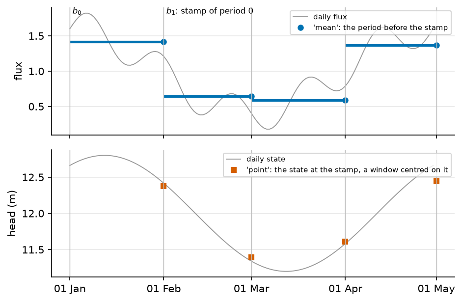

Time alignment of outputs and observations#
A run writes one value per stress period. An observation chronicle has its own dates. Before a simulated value and an observed one can be compared, both must mean the same thing on the same interval. This page gives the one convention every reader of a run follows: a stamp closes its period. A flux read at a stamp is the mean over the period before it; a state is the value at the stamp. How the inputs are put on the periods is on Rain and evaporation: the forcing.
Notation of this page
Symbol |
Meaning |
Unit |
Set by |
|---|---|---|---|
\(\Delta t\) |
length of a stress period, the stretch of time that gets one forcing value |
s |
|
\(t_0, t_\mathrm{end}\) |
first and last day of the run, the last day included |
date |
|
\(b_k\) |
edge \(k\) of the stress periods; period \(k\) is \([b_k, b_{k+1})\) and is stamped \(b_{k+1}\) |
date |
derived from |
\(\Delta t_o\) |
interval one observation stands for: the step of its chronicle |
s |
derived |
A stamp closes its period#
The periods are the intervals \([b_k, b_{k+1})\) of (1). Every solver stamps a period at its end: the time axis of a run is the start of the run plus the elapsed solver time. January 2000 of a monthly run is stamped 2000-02-01. A steady run over 2000 to 2002 has one period, stamped 2003-01-01. The stamp of period \(k\) is therefore \(b_{k+1}\).
What a stamp stands for depends on the quantity. The rule is read from the CF
cell_methods (mean or point) of the field in
the field registry of the code, or, for a
calibration variable the field registry does not hold, from a table of the
code. A name that nothing declares is a mean.
Method |
Quantity |
The value stamped \(b_{k+1}\) stands for |
|---|---|---|
|
recharge, drain and seepage fluxes, discharge, runoff, lake inflow and outflow |
the mean of the flux over \([b_k, b_{k+1})\) |
|
head, water table elevation and depth, seepage mask, lake level and volume, soil stores |
the state at the instant \(b_{k+1}\) |
For a steady first period, the head is the equilibrium under the forcing of that period, stamped at its end.
A period cut into time steps#
A solver can cut a period into time steps:
simulation.time.substeps_per_period, adaptive time stepping on MODFLOW 6,
or the internal steps of the Boussinesq PETSc closures. The run still stores one
value per period, the same way on MODFLOW 6, MODFLOW-NWT and Boussinesq:
a state is the value at the last step, which ends at the stamp;
a flux is the mean of the fluxes of the steps, each weighted by its length: recharge, wells, drains, fixed heads, river, stream and lake exchanges, storage and the release at the surface, cell by cell and in the budget tables, and the listing water balance of the period.
With one step a period, that mean is the flux of the step, unchanged. Each step closes its water balance, so the change of storage between the two stamps closes the balance of the period with these means.

Fig. 59 A flux (top) and a state (bottom) on four monthly periods, read by
period_mean_on_index and period_point_on_index. The flux of a stamp is
the mean of the period that ends there. The state is read at the stamp, here
on a window centred on it because the daily record is finer than the run.#
In the code: time_method_for.
An observation on the periods#
An observation is put on the periods by the same rule, so a simulated value and an observed one mean the same thing. Observations are stamped at the start of what they average: a daily mean at its day, a monthly mean at its month start.
A mean quantity. Period \(k\) takes the mean of the observations stamped in \([b_k, b_{k+1})\). A period with none takes the last observation stamped at or before \(b_k\) when the interval that observation stands for covers the whole period:
where \(t_h\) is the stamp of that observation and \(\Delta t_o\) the step of its chronicle. That is a monthly mean on a daily run. Otherwise the period has no value, and a gap in the chronicle stays a gap.
A state. A chronicle finer than the run is averaged on a window centred on the stamp, reaching halfway to the neighbouring stamps. A chronicle as coarse as the run, or coarser, gives the sample nearest the stamp, within the step of the run. Averaging a state over \([b_k, b_{k+1})\) would compare it with a value half a period earlier.
A steady period. One stamp does not say where the period starts. The scorer takes the start of the first period from the time grid of the run, so a steady discharge is compared with the mean of the gauge over the window of the run, not with its last day. A steady head is still read at its stamp.
In the code: observed_on_periods.
A series derived on the periods#
A series the run derives from a forcing, such as the catchment discharge built from a drain budget plus the runoff (8. Runoff is not recharge), takes the mean of the samples of each period and holds no value: a period with no sample is a gap, never the previous value. This is the one difference with an observation of the same kind. On the daily record of 1, 3 and 5 mm/day for January, February and March with the days of February removed, the three periods read 1, a gap, and 5.
In the code: period_mean_on_index.
Assumptions#
A stamp closes its period: a flux is a period mean, a state is a value at the stamp. A period cut into time steps stores the mean of its step fluxes and the state of its last step.
An observation is stamped at the start of what it averages.
An observation of a mean quantity stands for one step of its chronicle.
Limits#
A chronicle with gaps has a step taken from the median of its spacings: a period beyond that step after the last observation stays empty.
A state between two coarse stamps is not interpolated: it takes the nearest sample within the step of the run, or no value.
Checked by#
The tests that import the code of this page. The box is generated: a new test appears here on the next build.
9 test files import hydromodpy.core.time.period_aggregation, hydromodpy.core.time.time_method, hydromodpy.results.derive.time_alignment, hydromodpy.solver.modflow_common.period_steps. Their names say what they check.
unit: 9
- Persist trial series. calibration
- The protocol s block route matches the single metric one. calibration
- Period aggregation. core
- The soil storages are states at the stamp. core
- A state is read at its stamp. results
- Period bounds. results
- Solver time index. results
- Time alignment. results
- A stamp carries the period mean flux. solver
In the code#
What |
Where |
|---|---|
The stamp convention, mean and point rules |
|
The method of each quantity |
|
The steps of a period put on its stamp, MODFLOW |
|
The steps of a period put on its stamp, Boussinesq |
|
Runoff added to a drain budget |
|
See also#
Rain and evaporation: the forcing: how the inputs are put on the periods.
The inverse problem of a calibration: the scores that compare the aligned series.
[simulation]: the keys of the window and the periods.